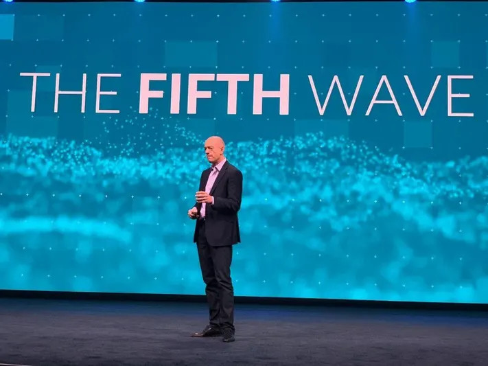
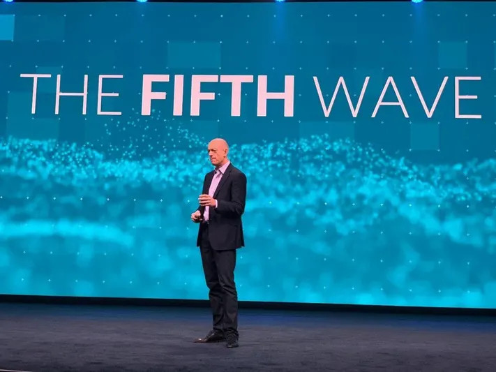
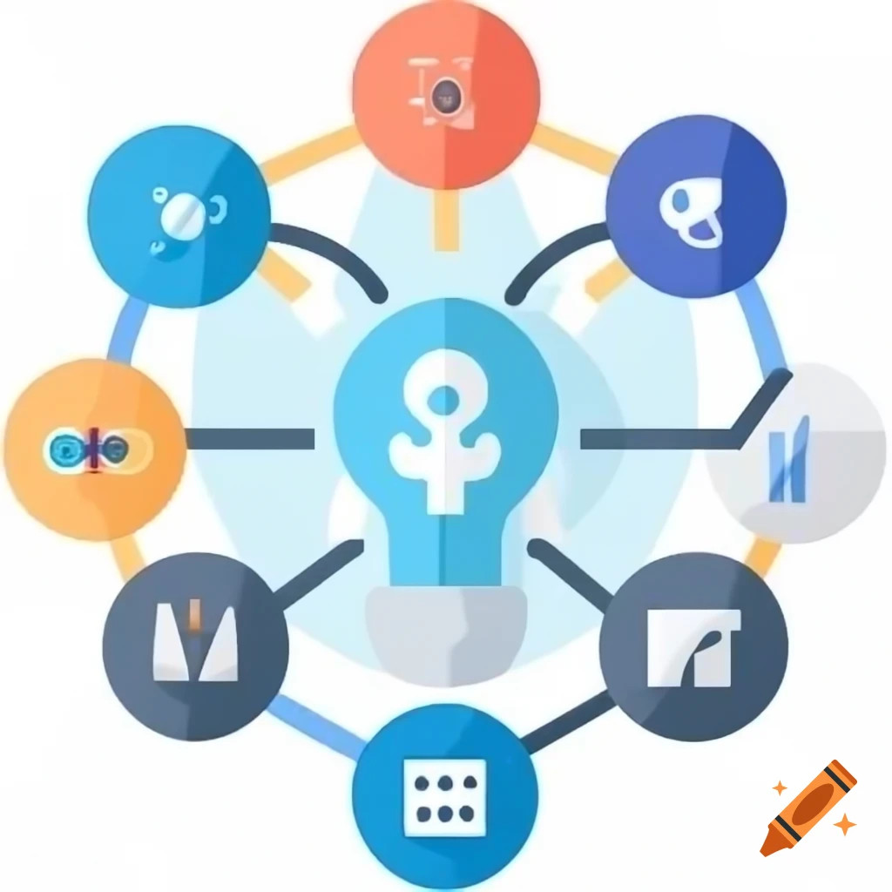
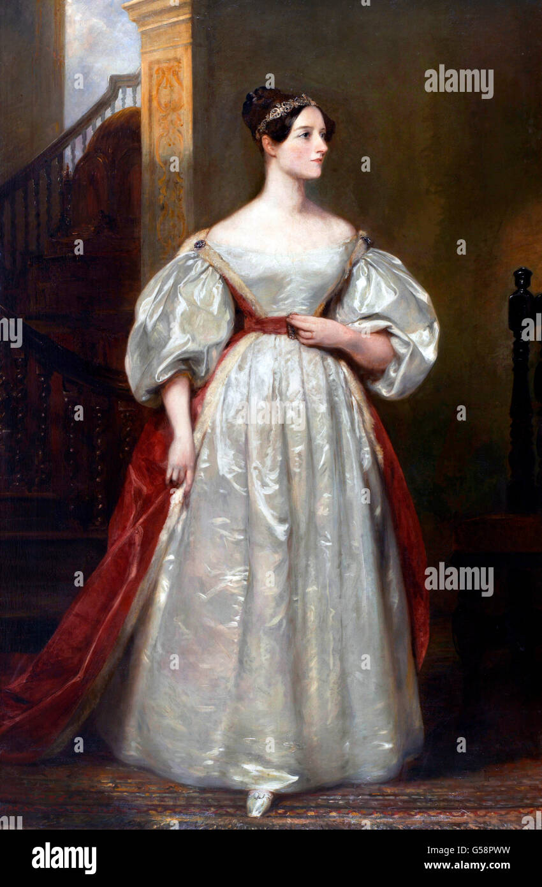

Our History
TechCon began in 2010 as a small gathering of tech enthusiasts. Over the years, it has grown into one of the leading global conferences showcasing innovation, startups, and thought leadership in technology.
TechCon began in 2010 as a small gathering of tech enthusiasts. Over the years, it has grown into one of the leading global conferences showcasing innovation, startups, and thought leadership in technology.
Our mission is to create a platform where the brightest minds in tech converge to share ideas, inspire innovation, and shape the future. We believe in accessibility, diversity, and collaboration.
A pioneer in computing, Dr. Lovelace delivered a keynote on the ethics of AI and the future of code.
Founder of SpacePets, Elon shared insights on launching tech startups and achieving moonshots.